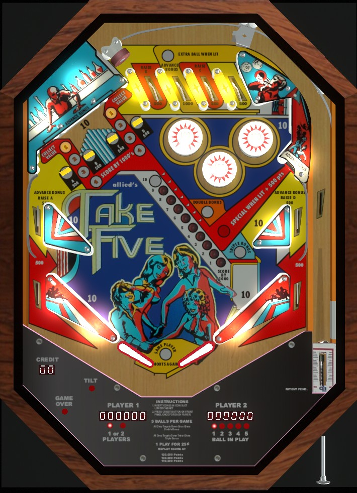

These three games share the same playfield, rules, and scoring, despite their different themes. The design was licensed back and forth between the two companies in an attempt to keep them in business. For brevity, this game uses the name Take Five to refer to all versions of the game.
Most of the points on Take Five are found at the drop targets in the upper left, and the standup targets behind those drops. Drop targets score 500 points, and knocking down all four advances bonus multiplier. The standup targets behind the drops advance the bonus and score a rotating value of up to 4,000 points which varies each time the left or right pop bumpers are hit. Watch the sensitivity of all 4 slingshots and make sure that any ball that goes down an upper side lane is properly fed in front of the lower slingshots instead of dropping into the out lane.
The below picture of Take Five's playfield was taken from the VPX recreation by Itchigo et al.

Counting from the left:
Each drop target down scores 500 points. The individual targets are labelled A, B, C, and D and can be individually re-raised by making the upper left side lane, top lane #1, top lane #3, and upper right side lane respectively. If all 4 targets are down at once, they will all reset and the bonus multiplier will increase, to 2x on the first completion and 3x on the second completion. There are no further bonuses for a third (or more) completion of the drop targets.
Behind the A and D drop targets are standup targets. These standups each have inserts reading 1, 2, 3, and 4 in front of them. Hitting the left pop bumper rotates which number is lit at the target behind A, and hitting the right pop bumper rotates which number is lit at the target behind D. (All three pop bumpers always score 100 points.) Hitting one of the upper left standup targets scores 1 bonus advance plus 1,000 times the currently lit number (up to 4,000 points) and resets the lit number in front of that target back to 1. If and only if both standup targets have the number 4 lit, the upper right standup target will be lit for Special in addition to its usual 500 points, which can score a free game or an extra ball.
The flippers back up directly to very large slingshots which always score 10 points. Out lanes score 500 points. Above the slingshots and out lanes are the upper side lanes and a second pair of slingshots. The upper side lanes score 500 points and a bonus advance, and also re-raise the A (left lane) and D (right lane) targets if they are down. The upper side lanes end in curved pieces of metal which should, but do not always, direct the ball to roll down the lower slingshots toward the flippers; if this does not work, a ball through the upper side lanes will fall into the out lane directly below. There is no kickback, center post, or other such anti-drain feature.
Bonus is advanced by the second top lane from left, either upper left standup target, or either upper side lane. Each bonus advance is worth 1,000 points in base bonus. The first step of bonus is not given for free, so it is possible to drain with 0 bonus. The first two completions of the drop targets advance the bonus multiplier to 2x, then 3x. Bonus multipliers are never given for free. Max bonus is 3x 10,000 = 30,000 points. There is no hold bonus feature and the bonus cannot be collected mid-ball in any capacity. Tilt ends the ball in play only.
A game can be set to 1, 2, 3, 4, or 5 balls, not just 3 or 5.
Specials and score thresholds can be set to give an extra ball instead of a free game. There is a maximum of 1 extra ball per ball in play.
The "line up feature", which causes the upper right target to be lit for Special if both upper left targets are lit for 4, can be set to be entirely disabled on the final ball of the game only.